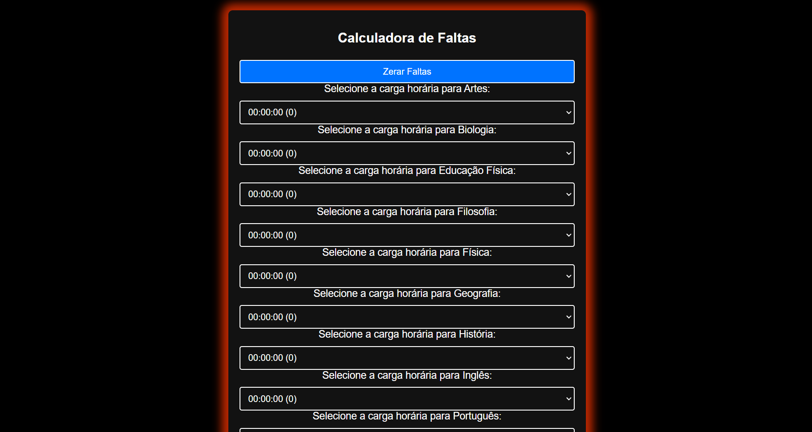
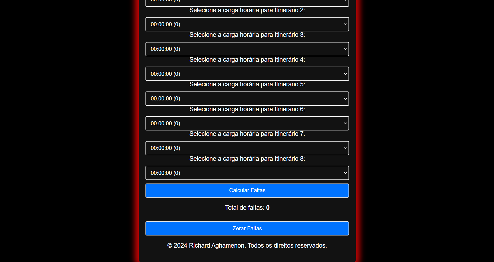

Olá, me chamoRichard Aghamenon
Eu
Falerei um pouco de minha Calculadora de Faltas!
Falerei um pouco de minha Calculadora de Faltas!
A Calculadora de Faltas foi idealizada por um professor que buscava facilitar o processo de cálculo das faltas de carga horária para os estudantes. A ideia central era desenvolver uma ferramenta prática que permitisse aos alunos converter o tempo de ausência em uma quantidade exata de faltas, ajudando-os a monitorar sua frequência e evitar problemas relacionados ao limite de faltas permitido.
Com essa proposta em mente, Eu (Richard Aghamenon) decidi desenvolver a Calculadora de Faltas utilizando HTML, CSS e JavaScript. Essas tecnologias foram escolhidas para garantir uma interface intuitiva e responsiva, proporcionando uma experiência de uso agradável e acessível.
O usuário informa a carga horária de faltas que vem em seu boletim do curso ou escola.
Através de um algoritmo em JavaScript, a ferramenta processa os dados e converte o tempo de faltas em uma quantidade de faltas, com base nas regras estabelecidas que são a carga horária de 50 minutos por aula.
Exemplo: 00:50:00 (Carga horária) = 1 (falta).
Após o cálculo, a calculadora exibe o número exato de faltas, permitindo que os estudantes visualizem facilmente o impacto de suas ausências.
A Calculadora de Faltas foi projetada para ser simples e eficiente, oferecendo feedback imediato e ajudando os alunos a manterem o controle sobre suas frequências. Essa ferramenta não apenas auxilia na gestão de faltas, mas também serve como um recurso valioso para a organização dos estudos, contribuindo para o sucesso acadêmico dos estudantes.
Se você está buscando uma maneira prática de calcular suas faltas e entender melhor sua situação acadêmica, a Calculadora de Faltas é a solução ideal!
 Fonte: https://meliodasbr-oficial.github.io/Calculadora-de-Faltas/  Fonte: https://meliodasbr-oficial.github.io/Calculadora-de-Faltas/